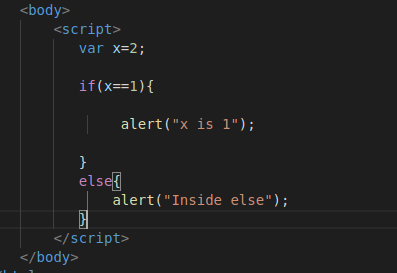

Its same as of other programming Languages
If else:

If else if :

Task: Create a game which generates random no and using if elese compare it with input and show appropriate message
https://developer.mozilla.org/en-US/docs/Web/JavaScript/Reference/Global_Objects/Math/random
Comparison operators
== //Checks only value
a=5
a==5 //holds true
a=="5" //holds true
=== //Checks value as well as type
a=5
a==="5" // holds false
!=
!== //The non-identity operator returns true if the operands are not equal and/or not of the same type.
<= , >=, >, < , &&, || ,